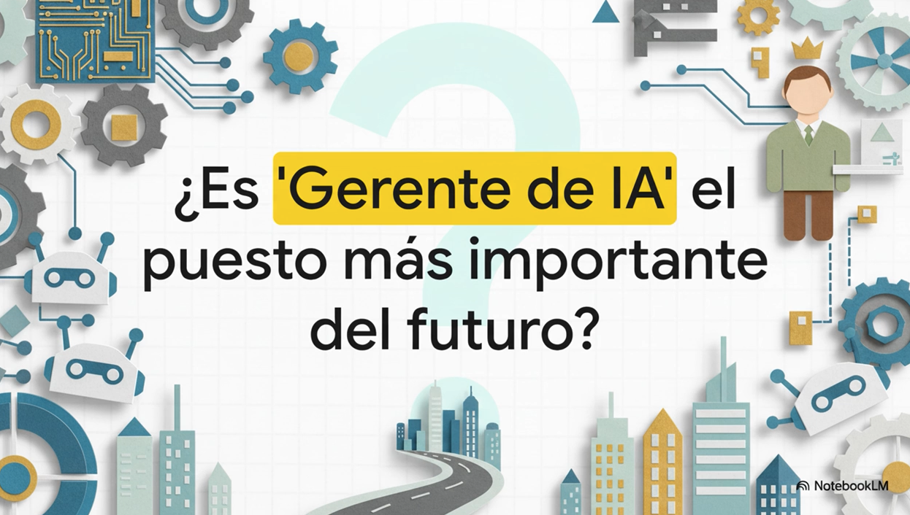

I built an analytical agent. Here's what actually happened.
Not a chatbot. Not a prompt chain. An agent with a name, a framework, custom skills, and real data. This is the architecture I ended up with — and what it took to get there.
I write about building AI agents, market intelligence, and the gap between what AI can do and how most people actually use it. Honest notes — not tutorials.
Not a chatbot. Not a prompt chain. An agent with a name, a framework, custom skills, and real data. This is the architecture I ended up with — and what it took to get there.
I was using AI like the clock didn't cost anything. Then I started building autonomous agents — and everything changed. Here's the hybrid model I actually use now.
I kept writing the same instructions over and over. One afternoon I stopped — and documented the process as a Skill instead. The result was predictable output without the daily effort.
An agent is like a new hire with unlimited potential and zero context. The people who already know how to onboard someone — and ask the right questions before delegating — build better agents. Here's why.
Between January and April 2026, 9,539 new mining claims were filed on federal land in the western U.S. I didn't process them manually. Three patterns stood out — and one state nobody was watching changed everything.
Most people burn through their Claude usage before the agent is even tested. I built a senior-level B2B SaaS ICP analyzer in under 3 hours using only 20% of my monthly limit. The secret was the orchestration — not the prompting.
The hiring model that built digital agencies is breaking down. Platforms are automating the skills that made specialists valuable — and most agencies haven't updated the job description.
I didn't set out to build an agent. I set out to solve a problem — and the agent was what the problem required.
The difference matters. Most people who build AI agents start with the technology. They discover what's possible and work backwards to a use case. I did the opposite. I had a specific analytical problem — one that required processing large amounts of structured data, applying a consistent framework, and producing usable intelligence — and I kept asking what tool could actually do that reliably.
The answer wasn't a chatbot. It wasn't a prompt chain. It was an agent with a defined architecture.
The system I ended up with has four components that work together in sequence:
Database → Agent → Skills → Analysis → Result
The database is the starting point. Raw data that I upload directly — not web searches, not summaries, not anything the model can find on its own. This matters more than it sounds. An agent that works on its own data behaves completely differently from one that goes looking for information. The former is precise. The latter is unpredictable.
The agent sits at the center. It has a defined analytical framework — a way of thinking about problems that I built over months of iteration. It knows what to look for. It knows what to discard. It knows when a signal requires deeper investigation and when it's noise.
The Skills are its tools. Each one is an instruction set that teaches the agent how to execute a specific type of analysis: how to cross-reference databases, how to score and filter records against a custom framework, how to produce structured intelligence from raw data. The skills reference each other. They share logic. And they evolve — every investigation sharpens the filters and refines the scoring.
This took months to build. Not because the technology is hard — it isn't, not at the surface level. What took time was teaching the agent to reason well about a specific domain.
There's a gap between an agent that can process data and an agent that applies sound judgment. The first is a technical problem. The second requires patience, failed experiments, and constant calibration.
I'm not a developer. I work in business development. But the architecture — skills, project knowledge, persistent memory — gave me the building blocks to create something that actually thinks about my problem.
Most of the work was defining what good reasoning looks like for this specific domain. What counts as a signal. What's a false positive. When to escalate and when to filter out. None of that comes pre-built. You have to teach it — and the teaching happens through iteration, not through prompting.
I'd start with the exclusion list. Before I defined what the agent should look for, I should have defined what it should ignore. The exclusion logic — the rules that eliminate false positives — turned out to be more valuable than the detection logic. A precise filter is worth more than a sensitive detector.
I'd also map the full workflow before writing a single skill. The biggest mistakes came from building individual pieces without a clear picture of how they'd connect. Skills that worked in isolation created conflicts when they ran in sequence. The architecture needs to exist on paper before it exists in the system.
If you're building something similar — an analytical system that works with real data, applies real logic, and produces consistent output — the question worth asking first isn't what the technology can do. It's what the problem actually requires. Start there, and the architecture follows.
For a long time, I used AI like the clock didn't cost anything. Message in, response out, correction, adjustment, another round. An entire afternoon to get to something that worked. It didn't matter — I was the one putting in the time, not the account.
That changed when I started building autonomous agents.
The first time I ran an autonomous agent, I brought the same pattern I'd always used. The agent got halfway through the process — and the usage limit hit. No result. Tokens burned in the middle of the road, not at the destination.
That's when I started thinking differently.
The first thing I did was map my entire workflow and decide what I do and what the AI does. And here's the part nobody says out loud:
Everything a human can do in a short amount of time, I do myself. I collect data, organize information, handle monotonous tasks that don't require complex reasoning. Not because I can't delegate them — but because that kind of work drains usage without generating proportional value.
What I delegate to AI is the analysis of large amounts of information. The kind of work that would take me days — and that I probably wouldn't do with the same depth even if I tried.
But without structure, the analysis comes out biased. That's where Skills come in — detailed instructions that tell the agent exactly how to execute each process, in what order, with what logic. Predictable results within a defined context. No improvising every time.
The shift was significant. From chatting for an entire afternoon to surgical prompts with refined Skills and human oversight at the key decision points.
Automation is attractive. But automating without designing the process first is just burning tokens with style. The hybrid Human-AI model isn't accidental — it's the most efficient way to work with what you have.
Here's how I actually divide the work now:
I handle: raw data collection, file organization, anything that takes under 10 minutes manually, and all decision points where judgment matters.
The agent handles: cross-referencing multiple data sources, applying scoring frameworks across hundreds of records, producing structured output from unstructured input, and any analysis that would take me days to do with the same rigor.
The boundary isn't fixed — it shifts as the agent gets better at specific tasks. But the principle stays: if a human can do it fast, a human should do it. Save the tokens for what the human can't.
The most expensive mistake in AI workflows isn't a bad prompt. It's using a reasoning model for tasks that don't require reasoning. Map the work first. Then build the agent.
There's a task I run often: download the inventory report and analyze it. Always the same process. Always from scratch.
For a while I handled it from the chat. Attach the file, write the instructions by hand, wait for the result. It works. But it depended on me remembering to say exactly the same thing I said last time — with the same criteria, the same order, the same logic.
I didn't always do it the same way. And that inconsistency was costing me more than I realized.
One afternoon I did something different. Instead of writing the instructions again, I documented them as a Skill inside my Claude Project.
Step by step. Objective. Rules. Reasoning defined. I tested it until the output was exactly what I needed — not close, not roughly right, but exactly right. Then I stopped touching it.
Now the flow is: download the raw report — .xls or .csv, doesn't matter — upload it to the Project, and ask it to run the Skill. That's it.
What changed isn't visible at first glance. But the process no longer depends on my instructions for the day. Not on whether I'm focused. Not on whether I remember how I did it last week.
The result is predictable because the process is documented — not memorized. That's what feeds automation: documentation, not memory.
A Skill can call another Skill. With isolated messages, that kind of consistent chaining is hard to achieve. With a Project structure, it becomes the default.
This isn't sophisticated automation. It's not impressive from the outside. But it's the foundation of everything that scales — because a process you had to explain once is a process you never have to explain again.
The real value of a documented Skill isn't the first time you run it. It's the tenth time. The twentieth. Every run where you don't have to reconstruct the logic, remember the edge cases, or correct a result that drifted because the instructions were slightly different.
Skills compound. The more you document, the more the system knows. The more the system knows, the less you have to explain. And the less you explain per task, the more tasks you can run in the same window.
Document the process once. Run it without thinking forever. That's the actual return on investment — not the first result, but the elimination of all the setup that precedes it.
If you're writing the same instructions more than twice, that's a Skill waiting to be built. One afternoon of documentation pays for itself the next time the report lands in your inbox.
An AI agent isn't software. It's a new collaborator with enormous potential and zero experience in what you specifically need.
No context. No judgment of its own yet. No institutional knowledge about your domain, your standards, or what "good" looks like in your workflow.
That description will sound familiar to anyone who has ever onboarded a new team member.
People who have managed projects and teams already know how to ask the right questions before delegating:
Those aren't AI questions. They're management questions. And the people who ask them habitually build better agents — not because they understand the technology better, but because they understand delegation better.

People who don't have that practice build agents with high expectations from the first attempt. The agent fails or doesn't meet expectations. They conclude the tool doesn't work. The experiment ends.
It's not that the tool failed. It's that the process wasn't designed properly. The same thing happens with a new employee who wasn't onboarded correctly — except we blame the process, not the person. With AI, we blame the technology.
At 95% accuracy per step, a 10-step workflow succeeds completely only 60% of the time. Few people calculate this before designing the agent — and that's why so many systems produce results that drift from what was intended.
AI applications are deliberately moving toward natural language. It's not accidental — the goal is to make these tools accessible to more people, not just developers.
What that means in practice is that the barrier to building useful AI systems is shifting from technical skill to process design skill. The people who will build the most effective agents aren't necessarily the best coders. They're the ones who know how to define a clear outcome, break it into verifiable steps, and create checkpoints that catch errors before they compound.
That's project management. And it's becoming a core skill for AI work.
Planning, delegation, process management, adaptability — these are quietly becoming key skills for building AI agents. The organizations that see this earliest will have a structural advantage.
If you've managed a team, you already have most of what it takes to build a well-functioning agent. The gap isn't technical. It's recognizing that the same discipline applies — and applying it deliberately from the start.
Between January and April 2026, 9,539 new mining claims were filed on federal land in the western United States. I didn't process them manually. An agent did — and three patterns stood out clearly enough that I had to write about them.
Nevada still dominates — 45% of all new claims filed nationwide landed here. That's not surprising. Nevada has been the center of U.S. mining activity for decades, and its established mineral corridors in Humboldt, Elko, and White Pine counties continue to attract volume.
What was surprising: the state is decelerating fast. Claims dropped 70% between January and March. The volume is there, but the momentum isn't. Nevada is a mature market being maintained, not expanded.
Cochise County alone absorbed over 700 new claims in the quarter — more than any other county in the country. That number didn't appear in any report I could find before running the analysis. It came from crossing the raw BLM filing data with county-level geolocation.
Arizona isn't being discussed the way Nevada is. That's usually when something interesting is happening.
This is the one that changed the analysis. New claims in Colorado grew 462% from January to March, concentrated in Chaffee County. Not a gradual increase — an acceleration. The kind that suggests something specific is driving it, not general market activity.
What's driving the Colorado surge? The data doesn't answer that. But it raises the question clearly enough that the answer is worth finding.
The agent cross-referenced federal BLM filing records, detected geographic clustering patterns by county and week, and flagged which states showed unusual acceleration against baseline rates. No spreadsheet. No manual filtering. The system ran the analysis; I interpreted the output.
That's the division of labor that makes this kind of work possible at scale. The agent handles the volume. The human handles the judgment about what the patterns mean.
Source: Bureau of Land Management — Mining Claims Case Actions (public record). This analysis is for informational purposes only and does not constitute investment advice or any recommendation regarding specific entities or securities.
9,539 claims. Three states. One pattern that nobody was talking about. That's what happens when you stop reading reports and start reading data.
Most people who try to build complex agents in Claude hit the usage limit before they run their first real test. I've done it. It's not a prompting problem — it's an architecture problem.
Sara is a B2B SaaS ICP Analyzer. She's a senior-level strategic agent that delivers deep market intelligence: who buys, why they buy, what stops them, and what metric they use to justify the spend. The full output is a 3-layer executive briefing ready to fuel a GTM strategy.
I built her in under 3 hours using only 20% of my monthly usage limit on a standard account. Here's the orchestration that made that possible.
Building a complex agent requires iteration. You define the persona, the scope, the skills, the output format. You test each component. You refine based on what breaks. That process is expensive — not in dollars, but in usage.
If you do all of that iteration inside Claude, you'll hit the ceiling before the agent is finished. The research phase alone — which is mostly exploratory and often gets thrown away — costs as much as the final build.
The solution isn't to build less. It's to do the expensive work somewhere cheaper.
Instead of burning Claude tokens on research and definitions, I used LLM Council — a tool by Erik MacKinnon — to iterate across three models simultaneously: ChatGPT, Gemini, and Perplexity.
Having three distinct perspectives running in parallel let me:
By the time I moved to Claude Opus for the final build and execution, the architecture was already defined. I wasn't exploring — I was building. That's a completely different kind of work, and it uses tokens very differently.
Total build time: < 3 hours
Claude usage consumed: ~20% of 5-hour window
Models used: ChatGPT + Gemini + Perplexity (research) + Claude Opus (execution)
Output layers: ICP Overview · Buying Committee · Growth Engine
If I had done the research directly in Claude, I would have hit the usage ceiling before running the first test report. The orchestration — not the prompting — is what made this efficient.
The output is a three-layer briefing. The first layer is the ICP overview: who the ideal customer is, what their revenue range looks like, which industries they operate in, and where they're located. The second layer is the buying committee: who the champion is, who the economic buyer is, who the gatekeeper is, and what each one needs to hear. The third layer is the growth engine: the metrics that justify the purchase, the flywheel that drives expansion, and the signals that predict churn.
Together they give a GTM team what they need to build messaging, prioritize accounts, and structure conversations — without starting from assumptions.
The real win is LLM Council. It makes it possible to interact with multiple models at once, giving you the best of every model while saving your heavy-duty tokens for final execution.
Token economy is a real constraint. But it's a design constraint, not a capability constraint. The agents that work within it aren't the ones with the best prompts — they're the ones with the most efficient architecture.
For years, the hiring model in digital marketing agencies was simple: find the person who knows the platform best. The Facebook Ads expert. The Shopify specialist. The Google Analytics guru. Stack enough specialists, and the results follow.
That model worked. And then the platforms changed underneath it.
After Apple's privacy updates — iOS 14.5 and everything that followed — the manual segmentation that made specialists valuable lost most of its edge. Meta's algorithm got better at targeting than any human. Broad audiences and Advantage+ campaigns started outperforming the carefully crafted audience stacks that specialists spent hours building.
The shift wasn't subtle. It was structural.
Being a technical specialist is still valuable. Knowing how to configure a Conversions API correctly, structure a product catalog, or diagnose why an Advantage+ campaign isn't spending — that knowledge matters.
But here's the problem: when the platform automates the execution, the specialist's ceiling drops fast. The value isn't in knowing which buttons to press anymore. The buttons are pressing themselves.
What matters now is knowing what signals to feed the algorithm, how to interpret what it does with them, and when to override its decisions with human judgment. That's not a technical skill. That's strategic thinking — and most agencies aren't hiring for it.
The best practices in e-commerce advertising today look nothing like they did three years ago. Broad targeting with Advantage+ Shopping Campaigns. Server-side tracking through CAPI. Creative-led strategies where the ad itself is the targeting mechanism. Dynamic catalogs. Unit economics as the primary optimization lever — not click-through rates.
Every one of those shifts moves the center of gravity away from platform expertise and toward system design. The person who wins isn't the one who knows Meta's interface best. It's the one who understands how the entire system connects — from the store to the pixel to the algorithm to the creative to the margin.
The agencies that are growing aren't looking for "the best Meta buyer." They're looking for someone who can translate business objectives into automated systems — and knows when the automation needs a human override.
This is where most conversations about AI in agencies go wrong. People hear "AI" and think content generation. Write copy faster. Generate more creative variants. That's useful, but it's the least interesting part.
The real shift is operational. AI as an analytical layer that monitors unit economics in real time. Orchestration tools that connect the e-commerce platform to the ad platform bidirectionally — adjusting budgets at 2 AM based on ROAS thresholds, not waiting for a human to check a dashboard in the morning.
I've built systems like this. Not because I'm a developer — I'm not — but because the architecture for connecting these pieces now exists in tools accessible to anyone who understands the logic. The technical barrier dropped. The strategic barrier didn't.
If I were building an agency team today, the most important hire wouldn't be a media buyer or a creative director. It would be someone I'd call an AI Systems Strategist — a hybrid profile that understands marketing, can connect APIs and automation tools, and translates business goals into systems that run without constant supervision.
This person doesn't need to code. They need to think in systems. They need to know when to automate and when to intervene. They need to understand that a 95% accuracy rate per step means a 10-step workflow only succeeds completely 60% of the time — and design accordingly.
That's not a job description most agencies are writing yet. But it's the role that will define which ones grow and which ones get stuck replacing specialists who can't keep up with platforms that are automating their own jobs.
The question for agency owners isn't "should we use AI?" — that ship sailed. The question is: are you building a team of platform operators, or a team of system architects? The operators will always be one update behind. The architects build infrastructure that adapts.
AI doesn't replace specialists. It restructures what they do. The agencies that see this early will have a structural advantage. The ones that keep hiring for the same roles they filled three years ago will keep wondering why their margins are shrinking.
The platform changed. The team structure needs to change with it.